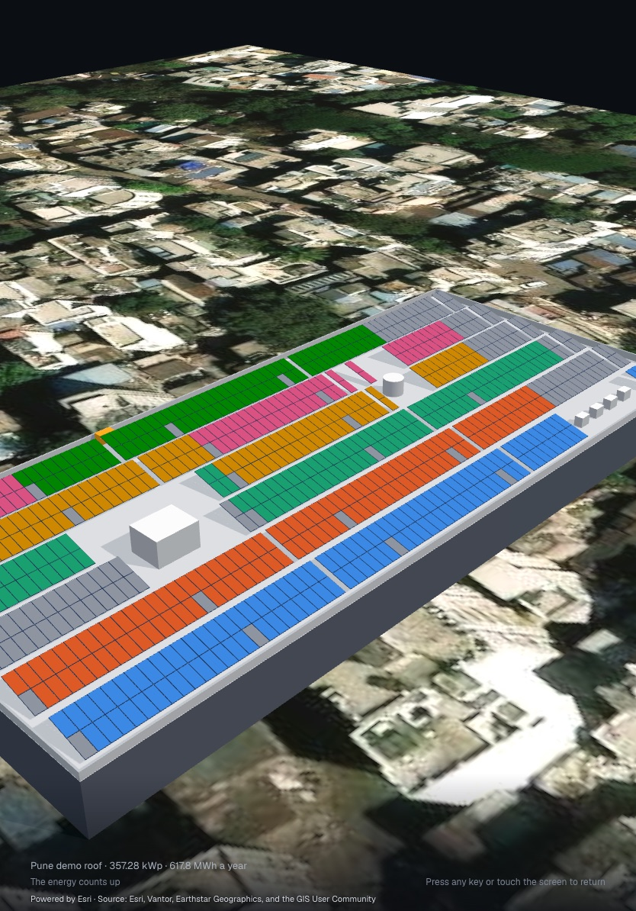

Answers V2-40 · V2-79 · V2-96 · V2-102 · V2-103
Present plays the design as six scenes on the whole screen, for a client. Each scene has one name and one figure, in the panel at the top left, over the stage as D72 set it: the place, the roof, the array, the sun, the strings, the energy. The energy's panel keeps the loss chain beside the figure, from the modules' rated output to the grid, its bars growing one after another as the energy counts (D72, D119); under the figure on phone. The line at the foot names what the scene shows, as a noun.
The presenter has controls: a move of the pointer or a touch shows them, and they fade after three seconds while the tour plays. Pause, the scene before and after, the six scenes as a track to jump to, and Leave. Keys: Space pauses, ← and → move between scenes, Esc leaves. Any other key does nothing, so a stray key never ends the tour.
With reduced motion the scenes are stills, each held for its time, and they change with a fade; the camera does not move.

Powered by Esri · Source: Esri, Vantor, Earthstar Geographics, and the GIS User Community